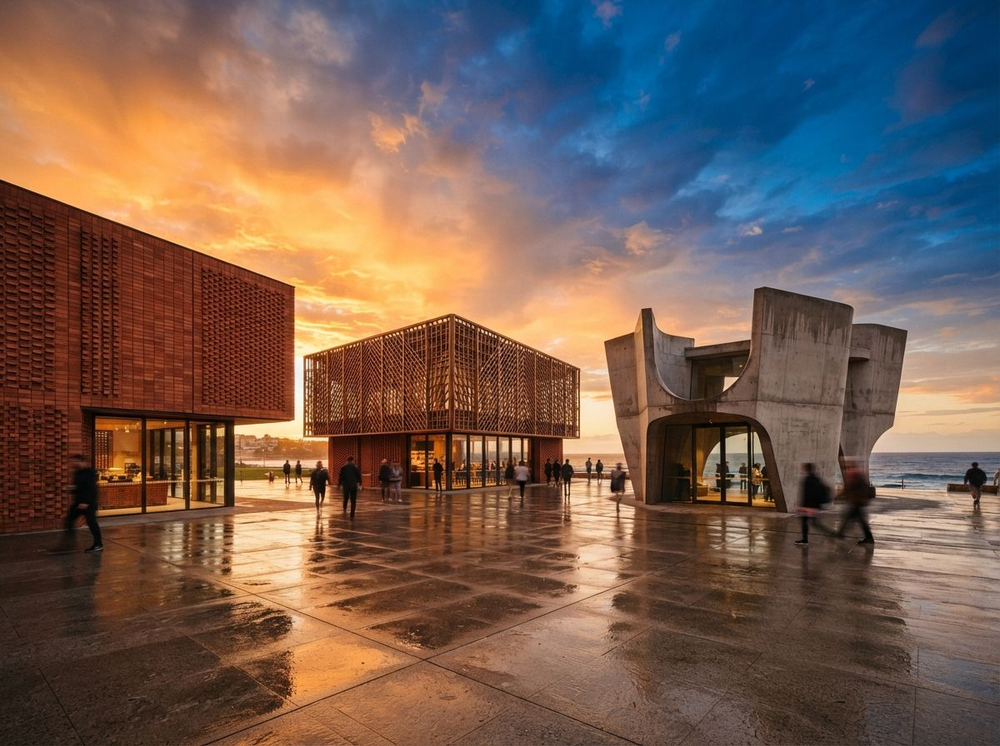
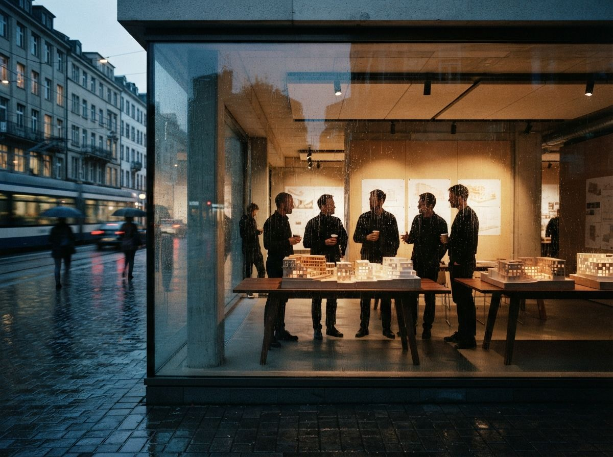

For most of the history of the profession, the number of design options a client saw was rationed by labour. You showed two or three because two or three was what a small team could draw to a presentable standard in the time available. That constraint did real work. It forced the office to decide, before anyone sat down, which directions were worth a client's attention. The cost of drawing was also the cost of editing, and the two arrived as a single bill.
AI removed the cost of drawing without removing the need for the editing. Generating a dozen credible alternatives now takes a prompt and a coffee break, so the temptation is to present a dozen. The expensive part of the work has quietly moved from the studio to the meeting, and most offices have not noticed the move, let alone staffed for it.
Why more options make a worse decision
Put twelve directions in front of a client and you have not been generous. You have outsourced the hardest editorial judgment in the project, deciding what not to pursue, to the person least equipped to make it. A client cannot hold twelve whole buildings in their head. So they do the only thing the format allows: they stop comparing designs and start comparing parts. They like the entrance on this one, the roof on that one, the window rhythm on a third.
This is choice overload, and it has a predictable shape. The more options on the table, the more the conversation drifts toward surface features that are easy to point at and away from the ideas that actually separate the schemes. By the end, the client is not choosing a building. They are assembling one, feature by feature, and the architect is taking the order. The result is a scheme that satisfies a checklist and holds together as architecture nowhere.
The deeper problem is authorship. When you present a curated pair of positions, you are still the author of both, and the client is choosing between two coherent arguments you have made. When you present a wall of twelve, you have stepped out of the author's chair and become a vending machine. The client reaches in and pulls out a combination, and the combination is theirs, which means the coherence is nobody's.
What a good option set is actually for
An option set is not a portfolio of everything you could make. It is an instrument for getting a specific decision out of a specific person. Three jobs, and a set that does not do all three is doing none of them.
- It narrows, it does not widen. The point of showing options is to close down the field, not open it. Each option you add past three tends to reopen questions the project should be leaving behind.
- It shows real tradeoffs. Two options that differ only in flavour give the client nothing to decide. Each direction should be strong at something the others are weaker at, so the choice means choosing a priority, not a colour.
- It keeps you the author. Every option on the table should be one you would happily build. If you are showing a direction to pad the set or to make your favourite look better by comparison, the client can tell, and you have spent trust you will want later.

Generate options that are actually different
The mechanical trap with AI is that it varies everything at once. Ask a generator for facade studies and it will happily hand back images that also differ in massing, time of day, materials and mood, because it has no reason not to. The client then reacts to a soup of changes and cannot tell you what they are responding to. Their feedback comes back as noise, and you cannot act on noise.
The fix is the same discipline that makes a fair tool comparison: change one variable, hold the rest fixed. Decide what the option set is testing, then lock everything that is not the subject of the test.
| What you are testing | Vary this | Hold this fixed |
|---|---|---|
| Massing and form | Volume, height, the big moves | Camera, materials, prompt, time of day |
| Facade treatment | Cladding, window rhythm, depth | Massing, view, lighting |
| Material and mood | Palette, finish, atmosphere | Geometry, framing, season |
Holding the camera steady matters more than it sounds. If each option is shot from a different angle, the client reads the angle as part of the design and rewards the flattering view rather than the better idea. Same frame, same light, one thing changing. That is what turns a set of pretty pictures into something a person can reason about. Locking those variables also leans on the same controls that govern how far a model is allowed to drift from your intent, which we covered in our piece on model adherence.
An option the client cannot reject is not an option. It is decoration with a number on it.

Present so the client decides, not designs
Editing the set down to three is half the job. The other half is how you put them in the room. Each option should arrive as a complete position with a one-line reason for existing: this one prioritises daylight, this one prioritises the street, this one is the cheapest to build and looks it in these two places. Name the tradeoff out loud. A client who understands that every direction gives something up is a client making a decision, not a wish.
Then hold the line on mixing. The request to take the roof from A and the windows from C will come, and it is the moment the meeting either stays a decision or becomes a design-by-committee session. The answer is not no, it is to explain what the combination costs: the roof from A was sized for A's massing, the windows from C were rhythmed to C's facade, and the splice usually serves neither. Offer to study a genuine fourth direction if the instinct is real, on your time, in the studio, where the editing happens properly.
And recommend one. An architect who lays out three options and expresses no preference has abdicated the part of the job the client is paying for. You are allowed to have a view. Stating it, with the reason, is not pushiness. It is the thing that separates an advisor from a catalogue.
Our take: the cheapness is the liability
The reflex around AI in the studio is to celebrate the volume. Look how many directions we explored. But volume of exploration and volume of presentation are different numbers, and confusing them is how good practices end up building committee architecture faster than ever. Explore widely in private, by all means. Generate thirty if it helps you think. Then do the work the generator cannot, which is to throw twenty-seven of them away and walk in with the three that earn the meeting.
The skill the moment rewards is subtraction. AI is generous to a fault, and the value an architect adds is now mostly in the editing the machine refuses to do. Show fewer, make each one buildable, own all of them, and recommend one. The room came for a decision, not a buffet. Give them the decision.
Drawn from this week's intel sweep of 2026 AI rendering coverage for architects, where the recurring theme across tool roundups was faster iteration and helping architects communicate and present ideas, plus Vista Studios experience presenting AI-generated option sets in live client meetings. Tool behaviour and model versions change; the presentation discipline here is the durable part. No affiliate relationship with any tool named.